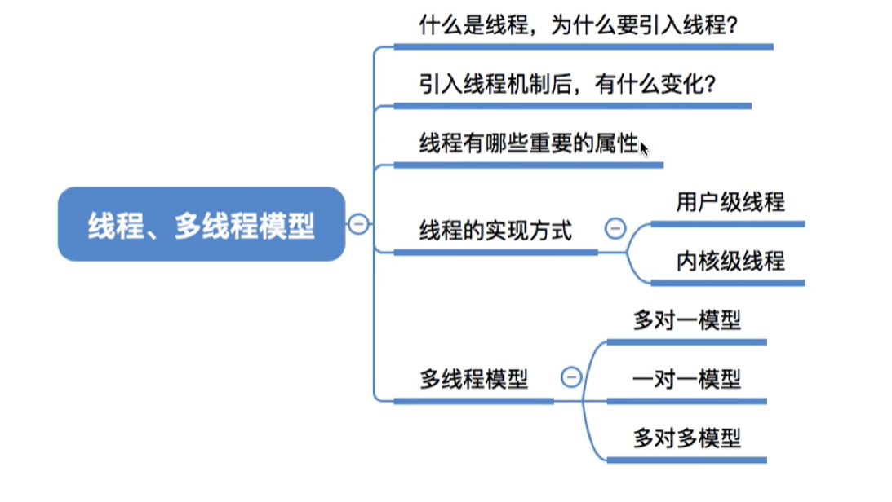
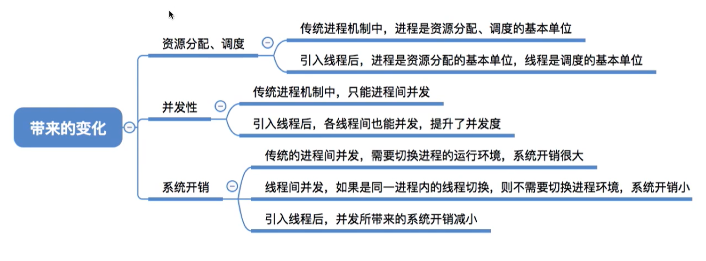
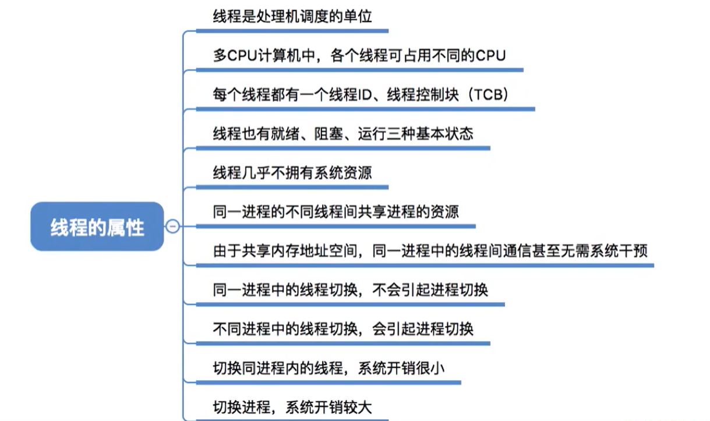
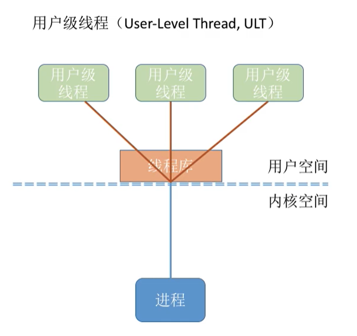
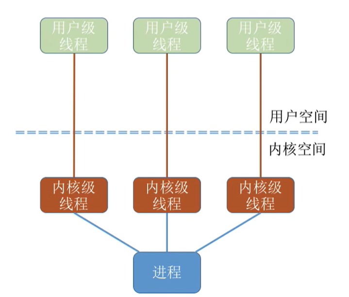
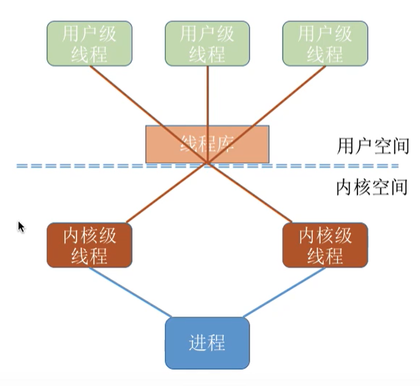
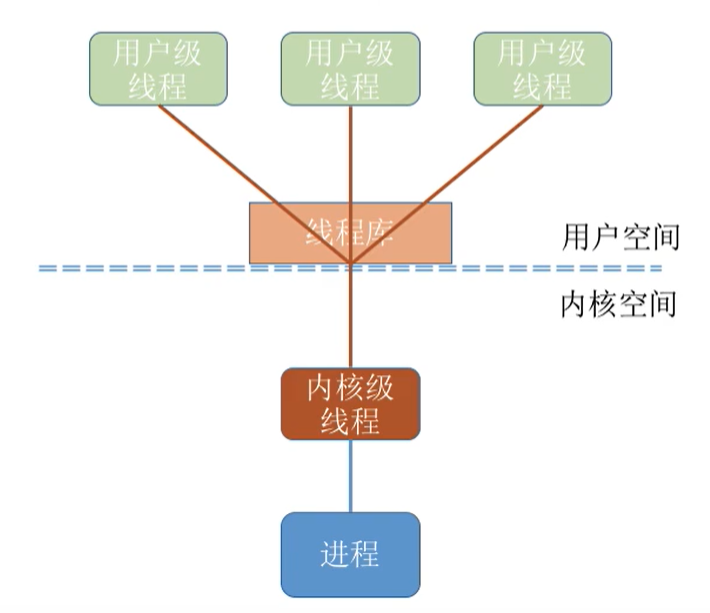
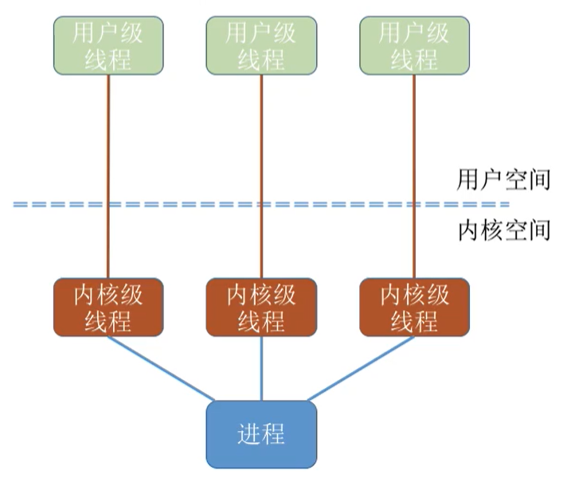
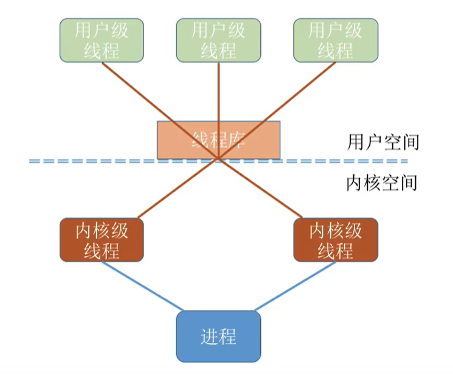
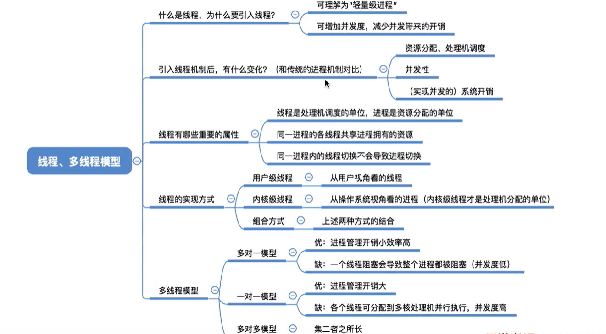

多线程模型（十一）
本文最后更新于：17 天前
知识总览

线程概念
在没有引入进程之前，系统在各个程序中只能串行执行。引入了进程之后，可以通过聊天加上听音乐。
但是一个聊天软件是一个进程，但是一个进程也要做很多的事情怎么办，发图片，语音，传送文件等等，应该怎么去做呢。
目前，线程是一个最基本的cpu执行单元，也是程序执行流的最小单位。
引入线程之后，进程只除cpu之外的系统资源的分配单元（如打印机，内存地址空间都是分配给进程的）
引入线程机制之后

线程的属性

线程的实现方式
用户级别线程

用户级别线程由应用程序通过线程库实现。所有的线程管理工作都由应用程序负责（包括线程切换）
用户级别线程，线程切换可以在用户态下面即可完成，无需操作系统干预。
内核级别线程

内核级线程的管理工作，由操作系统内核完成，线程调度，切换等工作，都由内核负责，因此，内核级别的切换必然需要在核心态下面才能完成。
总结
在同时支持用户级别线程和内核级别线程的系统中，可采用二者组合的方式，将n个用户级别线程映射到m个内核级别线程上。

只有内核级别线程，操作系统才是处理机分配的单位。
上图虽然有三个用户级别线程，但是只有两个内核级别线程。如果当前的cpu为4核，也只会分配2核。
多线程模型
在同时支持用户级别线程和内核级别线程的系统中，由几个用户级别线程映射到几个内核级别线程的问题引出了“多线程模型”问题
多对一模型
多个用户及线程映射到一个内核级别线程，每个用户进程只对应一个内核级别线程。

优点：用户级别线程切换在用户态就可以完成，不需要切换到核心态，线程管理的系统开销小，效率高。
缺点：当一个用户级别线程阻塞之后，整个进程都会被阻塞，并发度不高，多个线程无法在多个处理机上运行。
一对一模型

一对一模型：一个用户及线程映射到一个内核级别线程，每个用户进程与用户级别线程同数量的内核级别线程。
优点：当一个线程被阻塞后，别的线程还可以继续运行，并发能力强，多线程可以在多处理机上运行。
缺点：一个用户进程占用多个内核级别线程，线程切换由操作系统内核完成， 需要切换到核心态，因此线程管理的成本高，开销大。
多对多模型

n用户级别线程映射到m内核级别线程，每个用户对应m个级别内核线程
克服了多对一的模型并发读不高，克服一对一，一个用户进程占用太多的内核级别线程，开销太大的缺点。
知识回顾

本博客所有文章除特别声明外，均采用 CC BY-SA 4.0 协议 ，转载请注明出处！